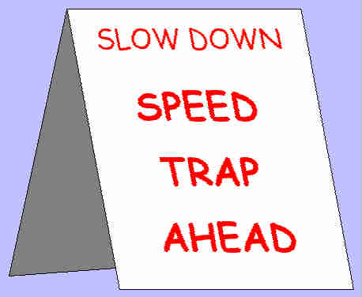
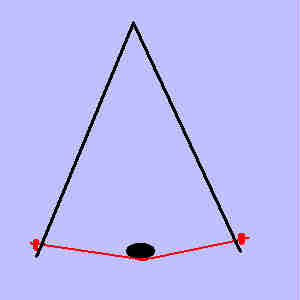
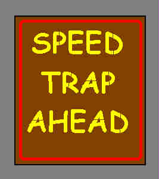
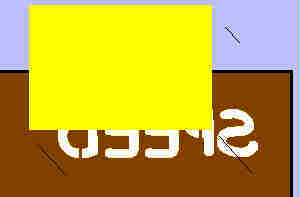

Speed Traps: Fighting Back
by
Sam Jensen
|
I saw a little cartoon in Doing Freedom! portraying one of our nation's finest protecting us from evil, wicked speeders. We all know they're much more dangerous than Al-Qaeda could ever dream of being. That, or our loving governments know what great revenue generators those speed traps are. Let's get real. Screw what the cops tell you about speeding being unsafe. If a cop really thought you'd done something criminally unsafe with your car, he wouldn't merely pull you over, hand you a bill for (yet another) tax due, and let you go. He'd arrest your hypervelocity butt, and haul it to jail. Just like he would if you'd done something criminally unsafe with, say, a gun. If the cops were out to make sure the roads were safe, they'd be cruising the highways watching for homicidal maniacs who can't control their vehicles. They wouldn't be hiding in the dark waiting for some poor, unsuspecting slob to exceed an arbitrary velocity threshold. Fight back First, protect yourself. If you don't have one, buy a radar detector for crying out loud already. Even multiband radar and laser detection units are cheap these days. Shop around. Possibly you live in a jurisdiction that benevolently protects you from the hazardous distraction of a detector going off (Virginia springs to mind). I understand the cops use radar detector detectors. No problem; you can even buy detector-detector detectors nowadays. Though you may need to get a buddy in another state to make the purchase and mail it to you. You should also be more observant (always a good idea anyway). As you drive, be on the lookout for brake lights ahead suddenly flashing for no immediately obvious reason; there's a chance that someone up just found a speed trap for you. Even if not, if people are stopping abruptly, it's a good idea to be ready to stop yourself. And though it seems to have gone out of fashion, keep an eye peeled for signals from drivers in the opposing traffic lanes. Used to be that kindly souls would spot traps, then advise folks approaching the point by flashing headlights or giving a slow-down gesture with a hand. Which brings me to active measures. You made it past a trap alive, with your wallet intact. Or you spied a trap set for folks in the opposite lane. What to do? Elightened self-interest. If you help them, someday they might be inclined to help you: Warn them. During daylight hours, give the other guys a "hold it down" gesture. At night, flash your high beams a couple of times. But try not to blind them. And if speed traps really piss you off... Signs, signs, everywhere a sign Speed traps are dangerous. Just recently, there was a multi-vehicle pile-up in Texas caused by one cop running a speed trap. People spotted him, decelerated. Behind them, others couldn't slow down fast enough; Wham! Yep, there's our cops keeping us safe. If you spot a trap, or know of a common trap location (the cops routinely hide on a blind curve below my place), post a sign warning your fellow drivers of the traffic hazard. Obviously fines-greedy cops won't appreciate your efforts to keep the roads safe. If they catch you posting a warning, expect trouble.
So don't get caught. Don't spend a long time erecting an elaborate sign. Here are a couple of el cheapo designs you can carry around in your car trunk for no-notice deployment any time you spot a trap. Pull 'em out, unfold 'em, and go. Daylight Signs for daytime use are a snap. Get a large piece of heavy cardboard from a big box, such as a refrigerator shipping box. Fold it in half, and paint your warning on one side.
 I suggest you make the warning highly visible by painting the background of the sign white, and using red or orange for the lettering. To stablize the sign and help keep it from blowing away, stretch a string or cord from one side of the sign to the other, slipped through small slits in the cardboard and knotted. You can set a big rock on the string to hold the sign in place.
 Night-time You could use the same sign at night; it just wouldn't be visible from as far; giving the cops' victim less time to slow down. You might try using reflective aluminum paint for the background and day-glow orange for the letters. Or you might even make an illuminated sign.
 For this, instead of just drawing letters on the sign, you cut them out; as if making a stencil. Then, when you place a light inside the sign, the letters will glow. To do this right, once you've cut out the letters, you need to paste or tape translucent material over the back of the letters. Waxed paper or some plastic sheets will work fine.
 When you set the sign, toss a Cyalume-type chemical light stick inside to illuminate the lettering. As I said, these signs can be set out quickly. And they're cheap enough to abandon: When the cops notice that no one is speeding, they might wonder why. If they come looking for that sign, you really don't want to go get it back from them. The signs are also cheap and compact enough that you can carry several in your trunk. And by the way... Should you happen to know of any unmanned radar cameras, I recommend baseball bats. Just remember to approach the camera from behind so you don't get your own picture taken. And I recall a suggestion involving surveillance cameras and .22s; that should apply to traffic cameras, too. Remember, every time you stop a cop from shaking a motorist down for money, you've deprived the State of revenue. And you've gotten drivers to safely slow down, without ripping them off.
Did you like this article?
 What would you do for cheap space access?
|